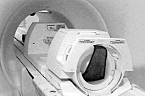
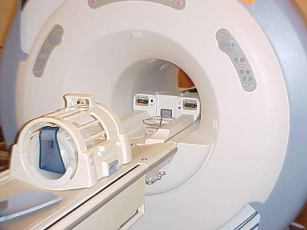
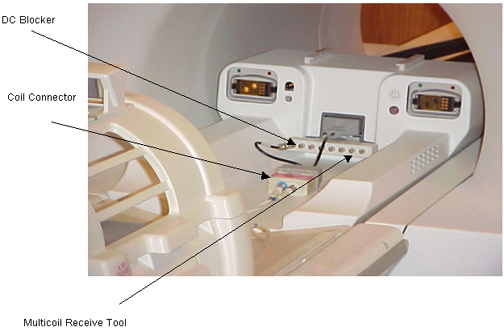
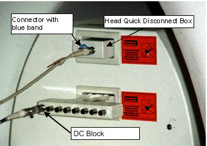

Proprietary to General Electric Company
Direction 5440000, Rev# 5
Signa HDxt Service Methods
Module Version 2.0, Version Date 11/5/08
Proprietary to General Electric Company |
| Required Persons | Preliminary Reqs | Procedure | Finalization |
|---|---|---|---|
| 1 | Not Applicable | 30 mins | Not Applicable |
For reference: MultiCoil Receive Chain Tool Overview
| Item | Qty | Effectivity | Part# | Manufacturer | |
|---|---|---|---|---|---|
| MultiCoil Receive Chain Tool | 1 | - | 2354598 | - | |
| TLT phantom in the head loader | 1 | - | - | - | |
| Condition | Reference | Effectivity |
|---|---|---|
Software revision 10.0 or greater has the necessary software needed to run MultiCoil Receive Chain (MCR) Tool. | - | - |
Click the (Service Tools) icon to open the Service Desktop Manager.
Click  in the lower part of the Service
Desktop Manager if the Common Service Desktop is not already visible.
in the lower part of the Service
Desktop Manager if the Common Service Desktop is not already visible.
| NOTE: | It takes a few seconds for the Common Service Desktop to appear. If the Common Service Desktop never appears, then confirm that it isn’t already open and that it hasn’t been dragged partially off the screen or that it isn’t hidden behind another open window. |
Click the (Image Quality) tab at the top of the Common Service Desktop.
Select [MultiCoil Receive Chain Tool] from the menu on the left side of the screen.
Under MultiCoil Receive Chain Tool on the right side of the screen, select [Click here to start this tool]. The MultiCoil Receive Chain Test window opens as shown in Illustration 1, below.
Illustration 1: MULTICOIL RECEIVE CHAIN TEST WINDOW

| NOTE: | It is suggested that for the first pass of this test, systems equipped with the 8-channel receive option should select the Test channels 1-8. Systems equipped with only 4-channel receive capability should select Test channels 1-4. In subsequent passes, if the problem is narrowed down to either the first or last 4 channels or a specific channel, choose the appropriate selection. |
Make the appropriate test selection; see Illustration 1 and Illustration 2 for options. Click [Continue].
Illustration 2: TEST SINGLE CHANNEL SCREENS

Prepare for a head scan using the TLT phantom in the head loader by landmarking the phantom and advancing to scan. Do not use scan prescription; the tool will automatically prescribe the necessary scan. See Illustration 3 for Split Head Coil. See Illustration 4 for Classic Head Coil.
Illustration 3: TLT PHANTOM IN SPLIT HEAD COIL

| NOTE: | The head scan is run only once at the beginning of the tests. The Head Loader Shell and Sphere assembly must be placed in the Split Head coil on the Head Loader Positioner Pad, (part number 5110241), that is shipped with every Split Head Coil. This pad assures that the loader and sphere are vertically centered in the coil. See Illustration 3. |
Illustration 4: TLT PHANTOM IN CLASSIC HEAD COIL

| ||||
| The middle two selections shown in Illustration 2 for
checking channels 1-4 and 5-8 will not be selectable on systems with
8 channels. The first selection for testing channels 1-8 will not
be selectable on systems with only 4 channels. It is very important that the initial landmark setting is maintained throughout the entire series of channel tests. The original landmark and scan provide the baseline SNR that is used for the tests performed on each channel. | ||||
Click [OK] in the setup window. The system performs a head scan and temperature compensation scan to create the baseline for all of the MultiCoil Receive Tests.
When the head data collection is complete, install the MultiCoil Receive Tool in the MultiCoil Quick-Disconnect receptacle. See Illustration 5.
Attach the receiver cable (with the DC block) to the connector directed in the Reconfigure Hardware window. Leave the transmit cable attached to the coil connector and install the head coil connector into the head port, as shown in Illustration 5 and Illustration 6 for a Split Coil and Illustration 7 for a Classic Coil.
| NOTE: | A special interface cable included in MCR Tool Kit, part number 2354598, was released over two years ago that includes a new cable. This cable must be connected as shown in the image below (Illustration 4a) when executing MCR on the new 1.5T Signa Split Head Coils. It has been reported that some individuals are trying to run MCR Test on the new Split Head Coil without using this cable. Doing this will result in SNR values that are substantially low |
Illustration 5: MCR TOOL SPLIT COIL CONNECTION - OVERALL VIEW

Illustration 6: MCR TOOL - SPLIT COIL CONNECTOR CONNECTIONS

Illustration 7: MCR TOOL - CLASSIC COIL HARDWARE SETUP

Click [OK] to continue the test.
| NOTE: | If the blue band is missing from the Head Quick Disconnect Box or the tool is unable to detect signal, refer to Appendix A for the procedure for performing a functional test. The Functional Test can also be accessed from the Documentation menu on the MCR GUI; that is, Documentation, Appendix, Verify Head Receive Line. |
After the scan, continue to change the receive cable connections as directed on the screen.
After the test is completed, the individual channel SNR results are displayed. See Illustration 8. Review the data for discrepancies in SNR from channel to channel. See “Example Data” in Illustration 11.
In this example you can see that SNR is very consistent from channel to channel (despite the gain variations) except for receive path 4. This indicates there is a single path failure that needs to be corrected. Refer to the T/S block diagrams available on the MCR Documentation menu (Appendix B in this document). These block diagrams can be used to identify which components to troubleshoot.
Illustration 8: INDIVIDUAL CHANNEL SNR RESULTS

To view the results of the test, in the MultiCoil Receive Chain Test window select File, then View Results. The results will then be displayed in an MCR Results window. See Illustration 9.
Illustration 9: VIEWING RESULTS

To view the Log File, in the MultiCoil Receive Chain Test window, select File, then View Log File. See Illustration 10.
Illustration 10: VIEWING LOG FILE

Illustration 11: 8-CHANNEL EXAMPLE DATA

To isolate the problem depicted in Illustration 9, select the Test single channel mode radio button in the MCR window, and test channel 4. Using the block diagram as a guide, substitute components from a neighboring receive path until the failing component is identified.
Tip: First view the images that were used in the SNR measurement before beginning the troubleshooting process. You may see something, such as a zipper artifact or something else, that makes it look like there is an SNR problem.
If all the channels have similar SNR (MCR passes), troubleshoot the specific surface coils that are causing the problem. (Check the coil config, external and internal cables, pin diodes, etc.)
The results files can be reviewed later from the standard Report Manager. Choose the file type MCR to recall these files.
To exit the MultiCoil Receive Chain Test, on the MultiCoil Receive Chain Test screen, select [File], then [Quit]. See Illustration 12.
Illustration 12:

| NOTE: | Do NOT exit the MCR Chain Test by clicking Close on the Control menu button in the upper left corner of the window. If you do, the MCR GUI will disappear, but the tool will continue to run. |
When you see the prompt “Press Ok Button below on this dialog box, if you want to exit,” select [OK].
If you closed the MultiCoil Receive Chain Test screen without selecting [File], then [Quit] on the MultiCoil Receive Chain Test screen , you will see this message shown in Illustration 12. Although it does not appear on the desktop, the previous MultiCoil Receive Chain Tool session is still running and must be closed before you can start a new session. To close the previous session, follow these steps:
From the Service Desktop Manager, open a [C-shell].
In the winterm window:
Type su root and press <Enter>
At the password prompt, type operator and press <Enter>
Type /usr/g/service/cclass/mcr/kill_mcr and press <Enter>
When a multi-digit number appears (confirming that the command was processed), start a new MultiCoil Receive session by following the instructions in Running the Tool.
No finalization steps.